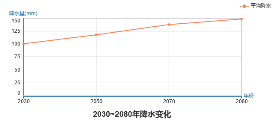

黑河流域是我国西北地区第二大内陆流域，位于河西走廊中部，为甘蒙西部最大的内陆河流域。
黑河发源于南部祁连山区，分东西两支：东支为干流，上游分东西两岔，东岔俄博河又称八宝河，源于俄博滩东的锦阳岭，自东向西流长80余公里，西岔野牛沟，源于铁里干山，由西向东流长190余公里，东西两岔汇于黄藏寺折向北流称为甘州河，流程90km至莺落峡进入走廊平原，始称黑河，上述流域为黑河(干流)的上游。西支源于陶勒寺，上游称讨赖河，也有东西两岔，于朱龙庙附近汇合，称北大河（或临水河）。黑河从莺落峡进入河西走廊,于张掖市城西北10km附近，纳山丹河、洪水河，流向西北，经临泽、高台汇梨园河、摆浪河穿越正义峡（北山），进入阿拉善平原。莺落峡至正义峡流程185km，为黑河（干流）的中游。黑河流经正义峡谷后，在甘肃金塔县境内的鼎新与北大河汇合，北流150km至内蒙古自治区额济纳旗境内的狼心山西麓，又分为东西两河，东河（达西敖包河）向北分八个支流（纳林河、保都格河、昂茨河等）呈扇形注入东居延海（索果淖尔）；西河（穆林河）向北分五条支流（龚子河、科立杜河、马蹄格格河等）注入西居延海（嘎顺淖尔）。
黑河从发源地到居延海全长 821km，横跨三种不同的自然环境单元，流域面积约14.29万km2 ，北部与蒙古接壤，东以大黄山与武威盆地相连，西部以黑山与疏勒河流域毗邻。分属三省（区），上游属青海省祁连县，中游属甘肃山丹、民乐、张掖、临泽、高台、肃南、酒泉等市县，下游属甘肃金塔和内蒙古自治区额济纳旗。
黑河流域气候干燥，降水稀少而集中，多大风，日照充足，太阳辐射强烈，昼夜温差大。由于受大陆性气候和青藏高原的祁连山—青海湖气候区影响，中下游的走廊平原及阿拉善高原属中温带甘—蒙气候区。根据干燥度，可进一步分为中游河西走廊温带干旱亚区及下游阿拉善荒漠干旱亚区和额济纳荒漠极端干旱亚区。
中游地区为流域主要的绿洲农业区，行政上隶属于甘肃省的张掖、酒泉市及嘉峪关市和民乐、山丹、临泽、高台等县，农作物以小麦、玉米、油菜、甜菜等为主，人口及国民经济情况列表 1.2所示。下游地区是以蒙古族为主体的荒漠牧业区，行政上隶属于甘肃省金塔县和内蒙古自治区额济纳旗及东风场区。 总的来看，流域内人口密度比较低，而且分布极不均匀。
流域平均年降水量为A mm，上游平均降水量B mm，下游平均降水量C mm。流域从**年到**年（目前），其年降水过程曲线如图1.1所示，降水平均年增长量为D mm。
 图1.1 **流域**年-**年年平均降水量曲线图流域平均年温度为A℃，上游平均温度B ℃，下游平均温度C ℃。流域从**年到**年（目前），其年温度变化过程曲线如图1.2所示，温度平均年增长量为D ℃。
图1.2 **流域**年-**年年平均温度变化曲线图流域上游为产流区，其总径流量为A 亿m3，年径流曲线如图1.3所示，中游是流域水资源主要消耗区，高耗水型的农业经济是其主要经济支柱，2008年（现状年）中游农业总耗水量达到B 亿m3，农业年水资源消耗量变化曲线如图1.4所示。
图1.3 **流域**年-**年年平均径流量变化曲线图 图1.4 **流域**年-**年年平均农业总耗水量变化曲线图流域平均年降水量为A mm，上游平均降水量B mm，下游平均降水量C mm。流域从**年到**年（目前），其年降水过程曲线如图1.1所示，降水平均年增长量为D mm。
图1.1 **流域**年-**年年平均降水量曲线图流域平均年温度为A℃，上游平均温度B ℃，下游平均温度C ℃。流域从**年到**年（目前），其年温度变化过程曲线如图1.2所示，温度平均年增长量为D ℃。
图1.2 **流域**年-**年年平均温度变化曲线图
尝试采用考虑了耦合作用的扩展傅里叶幅度敏感性检验法（Extended Fourier Amplitude Sensitivity Test，简称EFAST）进行确权，最后通过多指标综合模型计算发展指数得出评价结果。
根据Sobol方法的方差分解思想（1），可计算指标各阶敏感性指数（2）、（3），利用总敏感性指数确权（4），采用公式（5）计算各年可持续发展指数。
其中，\(V_i \) 为每一个输入参数引起的输出方差，\(V_{ij} \) 为输入参数 \(x_i \) 通过输入参数 \(x_j \) 贡献的方差（耦合方差）， \(V_{12···n}\) 为输入参数 \(x_i \) 通过输入参数 \(x_1 \) ， \(x_2 \)··· \(x_n \) 作用贡献的方差。输入参数 \(x_i \) 的一阶、二阶、三阶敏感性指数可定义如下：
输入参数\(x_i \) 的总敏感性指数\(ST_i \) 是各阶敏感性指数之和，可表示为：
通过计算每一年的各项指标权重的总敏感性指数，对第\(j \) 年（假设评价时段是\(m \) 年）\(n \) 个指标权重总敏感指数进行归一化处理，即得到该年评价指标的权重\(\omega_{ji} \) ，各年指标权重平均值即为最终权重\(\omega_i \) ，
最后，根据公式（5）可以计算出各年可持续发展指数。
水资源利用率定义，
水生产力定义。
水压力定义。
社会安全饮用水人口比例定义。
集成水资源管理执行度定义。(初值：黑河流域总面积 14.3 万 km2，中游面积 1.4 万 km2，上游面积 7608 km2，如果认为黑河分水影响到中游和下游，则流域水资源管理执行度为94.7%；如果认为黑河分水仅影响到中游，则流域水资源管理执行度为9.8%。 )
跨边界流域可操作合约有效性定义。
指标定义
指标定义
指标定义
指标定义
指标定义
指标定义
指标定义
指标定义
指标定义
指标定义
指标定义
指标定义
指标定义
指标定义
指标定义
指标定义
指标定义
指标定义
指标定义
| 年份/指标 | 2000 | 2001 | 2002 | 2003 | 2004 | 2005 | 2006 | 2007 | 2008 | 2009 | 2010 | 2011 | 2012 | 2013 |
|---|---|---|---|---|---|---|---|---|---|---|---|---|---|---|
| 水生产力(元每立方) | 16.08 | 15.57 | 16.09 | 15.83 | 15.08 | 16.19 | 15.80 | 17.47 | 15.84 | 15.45 | 14.71 | 16.85 | 15.37 | 15.98 |
| 水压力(%) | 1.68 | 1.85 | 1.71 | 1.62 | 1.85 | 1.79 | 1.85 | 1.61 | 1.70 | 1.68 | 1.82 | 1.72 | 1.61 | 1.78 |
| 安全饮用水比例(%) | 37.00 | 36.00 | 40.00 | 0.00 | 37.00 | 0.00 | 0.00 | 0.00 | 35.00 | 0.00 | 0.00 | 33.00 | 0.00 | 34.00 |
| 水资源管理执行度(%) | 94.70 | 101.62 | 102.49 | 91.30 | 84.52 | 85.83 | 106.82 | 108.37 | 85.10 | 107.91 | 94.35 | 96.29 | 85.80 | 89.80 |
| 可操作合约有效性(%) | 94.70 | 108.74 | 115.74 | 99.80 | 91.48 | 94.52 | 96.58 | 99.45 | 90.93 | 106.89 | 87.65 | 91.52 | 80.64 | 102.23 |
| 可持续湿地面积(万亩) | 500.00 | 507.00 | 516.00 | 490.00 | 518.00 | 480.00 | 467.00 | 523.00 | 456.00 | 509.00 | 461.00 | 547.00 | 481.00 | 513.00 |
| 下游可持续最小水量(亿m³) | 8.60 | 8.75 | 7.91 | 7.83 | 9.39 | 8.89 | 8.53 | 8.89 | 8.58 | 8.36 | 8.38 | 9.34 | 8.79 | 9.00 |
| 中游地下水开采量(亿m³) | 4.60 | 4.77 | 4.36 | 4.68 | 4.56 | 4.65 | 4.19 | 4.85 | 4.64 | 4.14 | 4.83 | 4.37 | 4.71 | 4.42 |
| 中游生态系统用水量(亿m³) | 0.69 | 0.75 | 0.66 | 0.75 | 0.73 | 0.68 | 0.76 | 0.71 | 0.64 | 0.68 | 0.70 | 0.70 | 0.64 | 0.71 |
| 森林覆盖率(%) | 2.80 | 3.11 | 3.04 | 2.77 | 2.47 | 2.78 | 3.18 | 2.85 | 2.69 | 2.88 | 2.58 | 2.95 | 2.61 | 2.83 |
| 可持续森林管理覆盖(%) | 90.00 | 92.44 | 105.60 | 94.49 | 84.91 | 81.40 | 94.17 | 87.55 | 81.77 | 104.10 | 81.45 | 96.24 | 82.39 | 88.21 |
| 山地绿色覆盖指数(%) | 60.00 | 62.47 | 56.30 | 64.32 | 63.84 | 56.17 | 71.74 | 56.20 | 59.55 | 53.36 | 57.22 | 59.44 | 56.05 | 63.49 |
| 人均GDP | 2.40 | 2.41 | 2.12 | 2.66 | 2.36 | 2.75 | 2.42 | 2.48 | 2.52 | 2.34 | 2.56 | 2.46 | 2.43 | 2.36 |
| 人均 GDP增长率(%) | 6.80 | 7.14 | 6.77 | 7.14 | 7.17 | 6.42 | 6.47 | 7.13 | 7.51 | 6.28 | 6.41 | 6.81 | 7.40 | 6.94 |
| 教育就业培训的年轻人比例(%) | 95.00 | 93.26 | 93.37 | 95.00 | 106.44 | 102.58 | 95.94 | 81.33 | 97.30 | 94.82 | 90.48 | 94.41 | 89.21 | 105.04 |
| 年轻人失业率(%) | 6.80 | 5.80 | 7.12 | 7.90 | 6.88 | 7.46 | 6.48 | 5.72 | 6.92 | 6.30 | 6.33 | 6.88 | 7.01 | 7.20 |
| 旅游业在 GDP中的比例 (%) | 9.60 | 9.29 | 9.37 | 9.25 | 8.85 | 9.14 | 9.50 | 10.65 | 9.00 | 10.94 | 9.06 | 8.56 | 9.40 | 9.62 |
| 旅游消费 | 10.00 | 10.36 | 10.62 | 10.19 | 8.88 | 9.94 | 9.67 | 9.70 | 10.59 | 10.99 | 10.49 | 8.78 | 10.49 | 10.45 |
| 土地消耗率/人口增长率(%) | 0.66 | 0.76 | 0.77 | 0.63 | 0.68 | 0.64 | 0.68 | 0.78 | 0.67 | 0.60 | 0.69 | 0.57 | 0.67 | 0.64 |
| 城镇化率(%) | 37.00 | 38.03 | 35.38 | 39.88 | 35.99 | 42.32 | 37.32 | 42.31 | 39.29 | 36.03 | 34.69 | 33.05 | 37.99 | 33.32 |
| 农业水生产力(公斤每立方米) | 1.20 | 1.22 | 1.15 | 1.26 | 1.28 | 1.22 | 1.16 | 1.20 | 1.28 | 1.02 | 1.08 | 1.24 | 1.03 | 1.18 |
| 农业水利用效率(%) | 53.00 | 55.48 | 62.30 | 59.52 | 47.42 | 51.26 | 51.84 | 53.00 | 46.92 | 53.80 | 53.00 | 56.01 | 45.74 | 55.58 |
| 每公顷农产品产值 | 0.01 | 0.01 | 0.01 | 0.01 | 0.01 | 0.01 | 0.01 | 0.01 | 0.01 | 0.01 | 0.01 | 0.01 | 0.01 | 0.01 |
| 维持可持续的农业种植面积(万亩) | 358.00 | 366.59 | 352.99 | 382.34 | 384.49 | 351.56 | 359.43 | 365.88 | 352.99 | 335.80 | 391.65 | 366.59 | 352.99 | 352.99 |
| 可持续社会福利指数 | 1.00 | 0.97 | 0.91 | 0.95 | 1.09 | 1.00 | 0.96 | 1.07 | 1.00 | 1.09 | 0.93 | 0.90 | 0.96 | 1.02 |